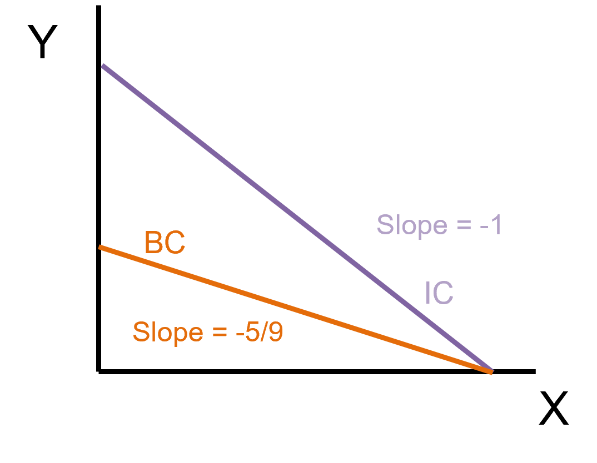
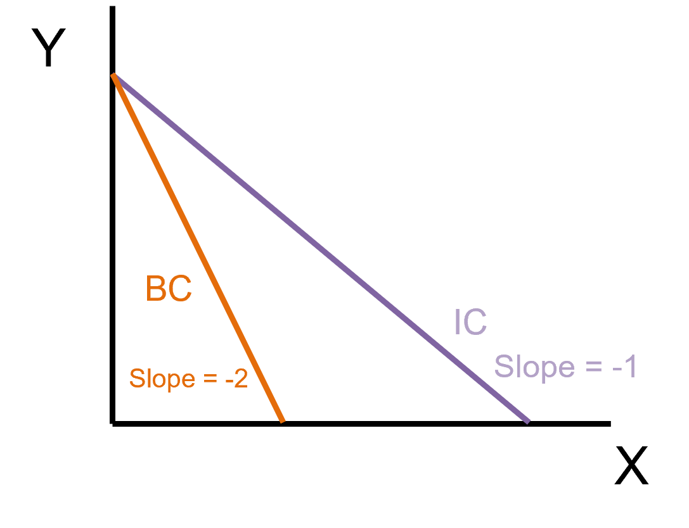
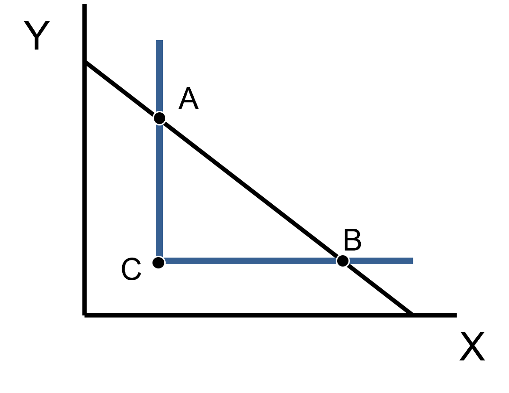
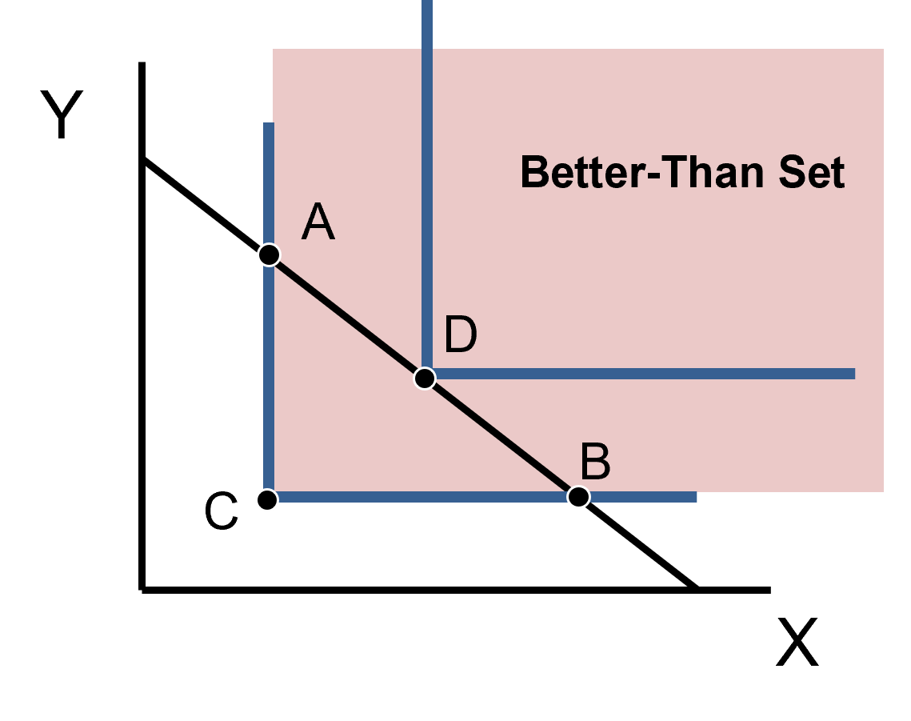

How to Tackle This Mathematically
We know the steps:
Calculate the MRS of a given utility function
Calculate the Price Ratio using the Budget Constraint
Set them equal to each other
. . .
It really is this simple, but the math makes it look more complicated
Defining the Problem
The problem will take the form of
\[\max \; U(x,y) \;\;\;\; \text{subject to} \;\;\;\; P_{x} \cdot x + P_{y} \cdot y = M\]
. . .
This is what we call a Constrained Optimization problem
- You are trying to maximize your utility subject to a budget constraint
Different Utility Functional Forms
We had four different forms that utility can take:
. . .
Cobb-Douglas
Quasi-linear
Perfect Substitutes
Perfect Complements
. . .
Each have their quirks and procedure to follow
. . .
Solving these type of problems is the crux of the course. I know it can be intimidating at first glance, but my personal advice is to not over think the process, that’s what the steps are for
. . .
The theory is what will guide you and allow you to interpret results, and it may seem wonky at first but that’s just how economists think
Cobb-Douglas Utility Constrained Maximization
There is a 4-step approach that we will follow to solve these problems when the utility function is Cobb-Douglas
. . .
Calculate the MRS and set it equal to the Price Ratio
Re-arrange this equality to isolate one good (\(x\) or \(y\)) as a function of the other (It does not matter which good you choose here).
- The resulting equation is called an “optimality condition”
Write down your budget constraint and plug the optimality condition into it.
- This allows you to solve for the demand of one of the two goods
Use your demand for one good and plug it into either the optimality condition or the BC to find the demand for the other good
1 - Calculate MRS and Set Equal to Price Ratio
\[\text{Let } \, U(x,y) = xy, \; P_{x} = 1, \; P_{y} = 2, \; M = 12\]
. . .
Find MRS
\[MRS = \dfrac{MU_{x}}{MU_{y}} = \dfrac{y}{x}\]
Find Price Ratio
\[\text{Price Ratio} = \dfrac{P_{x}}{P_{y}} = \dfrac{1}{2}\]
Set them equal to each other
. . .
\[\dfrac{y}{x} = \dfrac{1}{2}\]
2 - Re-arrange the Equality to Isolate for One Good
\[\dfrac{y}{x} = \dfrac{1}{2}\]
You can isolate either \(x\) or \(y\)
Isolating \(y\)
\[y = \dfrac{x}{2}\]
Isolating \(x\)
\[x = 2y\]
. . .
These are optimality conditions for \(x\) and \(y\)
They tell us the demand of a good conditional on other model parameters
3 - Write Down BC and Plug An Optimality Condition
\[y = \dfrac{x}{2} \;\; \& \;\; BC: \, x + 2y = 12\]
Here I will plug in my known value of \(y\) anywhere I find a \(y\) in the BC
. . .
\[\begin{align*} x + 2y &= 12 \\ x + 2(\dfrac{x}{2}) &= 12 \\ x + x &= 12 \\ 2x &= 12 \\ x^{*} &= 6 \end{align*}\]
Note: I will denote the optimal amount for any good as \(x^{*}\) or \(y^{*}\) or whatever variable the problem uses
4 - Plug Demand for One Good into Optimality Condition or BC
\[\text{We found that } x^{*} = 6\]
I’ll do it both ways just to show you that it works but you only have to do one (I recommend finding which one is simpler for you)
Plugging into Optimality Condition
\[\begin{align*} y &= \dfrac{x^{*}}{2} \\ y &= \dfrac{6}{2} \\ y^{*} &= 3 \end{align*}\]
Plugging into Budget Constraint
\[\begin{align*} x^{*} + 2y &= 12 \\ 6 + 2y^{*} &= 12 \\ 2y^{*} &= 6 \\ y^{*} &= 3 \end{align*}\]
. . .
Lastly, in exams I will expect the answers to be identified at the end of your work so I know you actually answered the question that was asked
Cobb-Douglas 2: Example For You
\[U(x,y) = x^{1/4}y^{3/4}, \; P_{x} = 2, \; P_{y} = 3, \; M = 32\]
What are the optimal amounts of \(x\) and \(y\) to maximize this individual’s utility subject to their budget constraint?
\[x^{*} = 4 \; \& \; y^{*} = 8\]
What utility level \(U^{*}\) is achieved?
\[U^{*} = (x^{*})^{1/4} (y^{*})^{3/4} = (4)^{1/4} (8)^{3/4} = \ldots\]
Cobb-Douglas 2: Solution
\[MRS = \dfrac{MU_{x}}{MU_{y}} = \dfrac{1/4 \, x^{-3/4} y^{3/4}}{3/4 \, x^{1/4} y^{-1/4}} = \dfrac{1/4}{3/4} \cdot \dfrac{y^{3/4} y^{1/4}}{x^{1/4} x^{3/4}} = \dfrac{1}{3} \cdot \dfrac{y}{x}\]
. . .
Also recall:
\[MRS = \dfrac{a}{b} \cdot \dfrac{y}{x} = \dfrac{1/4}{3/4} \cdot \dfrac{y}{x} = \dfrac{1}{3} \cdot \dfrac{y}{x}\]
. . .
\[\text{Price Ratio} = \dfrac{P_{x}}{P_{y}} = \dfrac{2}{3}\]
. . .
\[\dfrac{y}{3x} = \dfrac{2}{3} \; \rightarrow \; y = 2x\]
. . .
Plug optimailty condition into BC
\[\begin{align*} \text{BC: } 2x + 3y &= 32 \\ 2x + 3(2x) &= 32 \\ 8x &= 32 \\ x^{*} &= 4 \end{align*}\]
Find demand for \(y\)
\[\begin{align*} y^{*} &= 2x^{*} \\ y^{*} &= 2(4) \\ y^{*} &= 8 \end{align*}\]
Quasi-linear Utility Constrained Optimization
To solve problems with this utility functional form we repeat the same steps as C-D but we skip step 3
Find the MRS and set it equal to the Price Ratio
Solve the equality for the non-linear good (usually inside the \(ln()\))
Use the BC to find the demand of the other good
1 - Find the MRS and set it equal to the Price Ratio
\[\text{Let } \, U(x,y) = 10 \cdot ln(x) + \dfrac{y}{2}, \; P_{x} = 5, \; P_{y} = 2, \; M = 70\]
. . .
Find MRS
\[MRS = \dfrac{MU_{x}}{MU_{y}} = \dfrac{10/x}{1/2} = \dfrac{20}{x}\]
Find Price Ratio
\[\text{Price Ratio} = \dfrac{P_{x}}{P_{y}} = \dfrac{5}{2}\]
Set them equal to each other
. . .
\[\dfrac{20}{x} = \dfrac{5}{2}\]
2 - Solve the Equality for the Non-linear good
\[\dfrac{20}{x} = \dfrac{5}{2}\]
We solve for x (notice there is no \(y\))
. . .
\[\begin{align*} 40 &= 5x \\ x^{*} &= 8 \end{align*}\]
3 - Use BC to Find Demand of Other Good
\[\text{BC: } 5x + 2y = 70, \;\; x^{*} = 8\]
. . .
\[\begin{align*} 5x^{*} + 2y &= 70 \\ 5(8) + 2y &= 70 \\ 40 + 2y &= 70 \\ 2y &= 70 \\ y^{*} &= 35 \end{align*}\]
Perfect Substitutes Constrained Optimization
Recall the functional form
\[U(x,y) = ax + by\]
Mathematically, the MRS will just equal a constant \(\left(\dfrac{a}{b} \right)\) so setting it equal to the price ratio doesn’t really do much
It will either be larger than, smaller than, or equal
So what do we do? A graph will help us see
Perfect Substitutes Optimization Graph
\[\text{Let } U(x,y) = x + y, \; P_{x} = 10, \; P_{y} = 18, \; M = 90\]
Find the MRS
\[MRS = \dfrac{1}{1} = 1\]
Find Price Ratio
\[\dfrac{P_{x}}{P_{y}} = \dfrac{10}{18} = \dfrac{5}{9}\]
Graph

Perfect Substitutes Optimization Graph
Here, the individual chooses to only consume good \(x\) and no \(y\). Why?
The ICs are steeper than the BC
The intuition is saying that the willingness to trade \(y\) for \(x\) is always larger than the ability to trade
This individual will get all the \(x\) they can!
Perfect Substitutes Optimization - Example
\[U(x,y) = 2x + 3y, \; P_{x} = 1, \; P_{y} = 1/2, \; M = 5\]
Find the MRS
\[MRS = \dfrac{2}{2} = 1\]
Find Price Ratio
\[\dfrac{P_{x}}{P_{y}} = \dfrac{1}{1/2} = 2\]
Graph

Have students do this one
Perfect Substitutes Optimization
As we saw, maximization problems with P-Subs functional form have two predictable outcomes
Either you consume all \(x\) and no \(y\) or all \(y\) and no \(x\)
- It depends on the relationship between the MRS and the Price Ratio
. . .
There is the unusual case where the slopes are the same
Graphically, this means that they will perfectly overlap
Mathematically, any bundle that meets the requirements will work
Perfect Substitutes Utility Constrained Optimization
The graphs we just saw tell us how to do the math:
Find the MRS and Price Ratio
Compare the MRS to the Price Ratio
- If \(\text{MRS} > \text{Price Ratio}\), consume all \(x\) and \(y\) = 0
- If \(\text{MRS} < \text{Price Ratio}\), consume all \(y\) and \(x\) = 0
Figure out how much \(x\) and \(y\) to consume using the BC
P-Subs Example (Mathematically)
\[U(x,y) = 3x + 2y, \; P_{x} = 1, \; P_{y} = 4, \; M = 60\]
Find MRS and Price Ratio
\[\begin{align*} MRS &= \dfrac{MU_{x}}{MU_{y}} = \dfrac{3}{2} \\ \text{Price Ratio} &= \dfrac{P_{x}}{P_{y}} = \dfrac{1}{4} \end{align*}\]
Compare MRS to Price ratio
\[\begin{align*} \dfrac{3}{2} &> \dfrac{1}{4} \\ \text{MRS} &> \text{Price Ratio} \end{align*}\]
Choose only \(x\)
Figure out how much \(x\) and \(y\) to consume using the BC
. . .
\[\begin{align*} \text{BC: } x + 4y &= 60 \\ x + 4(0) &= 60 \\ x^{*} &= 60 \\ y^{*} &= 0 \end{align*}\]
Perfect Substitutes Optimization Intuition
With Perfect Substitutes the goods do not interact at all
So the question really becomes:
. . .
- Which of these two goods is more cost-effective at generating utility?
. . .
When you say that the MRS is less than the Price Ratio, you are also saying that you get fewer units of utility per dollar spent on \(x\) than per dollar spent on \(y\). Therefore, you should only consume \(y\).
Note: This logic only works for Perfect Substitutes. This is because the MRS is always a constant
Perfect Complements Utility Constrained Optimization
Recall: We cannot solve this utility form like the others because there is no MRS
. . .
So let’s see what a graph can tell us
\[U(x,y) = \min \{2x,3y\}, \; P_{x} = 2, \; P_{y} = 2, \; M = 40 \]
. . .

Point C is the minimum point of this indifference curve but is it maximizing?
- Why not choose Point A or Point B if they are on the BC & IC?
- Because there is a higher IC that exists!
Perfect Complements Utility Constrained Optimization - Graph

Hidden Point D is the actual maximizing point
. . .
Remember that there are is always a Better-Than Set where other ICs exist
- It just happens that if they are beyond the BC they are unaffordable
Perfect Complements Graph Intuition
The bundles on both the IC and the BC involve “wasting” one good or the other
Recall that the “No-Waste Condition” says that you should achieve a certain utility level with the minimum units of \(x\) and \(y\) possible
- In other words, you want to be at the “kink” of the function
. . .
The previous graph showed us that Point D is the utility maximizing point, now let’s learn how to find it
Perfect Complements Contrained Optimization
I will be bold and say that this is one of the simpler utility functions to maximize
Just be sure to follow the steps:
Solve the “No-Waste Condition” for one of the goods (Does not matter which one)
Plug the optimality condition into the budget constraint and find the demand of one Good
Use either the BC or the “No-Waste Condition” to solve for the demand of the other good
1 - Solve the No-Waste Condition for One of the Goods
\[U(x,y) = \min \{\dfrac{x}{2}, 2y\}, \; P_{x} = 1, \; P_{y} = 3, \; M = 56\]
Solve the No-Waste Condition
. . .
Solving for \(x^{*}\)
\[\begin{align*} \dfrac{x}{2} &= 2y \\ x^{*} &= 4y \end{align*}\]
Solving for \(y^{*}\)
\[\begin{align*} \dfrac{x}{2} &= 2y \\ y^{*} &= \dfrac{x}{4} \end{align*}\]
2 - Plug the Optimality Condition into the BC to Find Demand of One good
\[x^{*} = 4y \; \text{or} \; y^{*} = \dfrac{x}{4} \;\; , \;\; \text{BC: } x + 3y = 56\]
. . .
\[\begin{align*} x + 3y &= 56 \\ (4y) + 3y &= 56 \\ 7y &= 56 \\ y^{*} &= 8 \end{align*}\]
3 - Use BC or “No-Waste Condition” to Find Demand for Other Good
\[y^{*} = 8 \;\; \text{and} \;\; \text{No-Waste Condition: } \dfrac{x}{2} = 2y\]
\[\begin{align*} \dfrac{x}{2} &= 2y \\ x^{*} &= 4y \\ x^{*} &= 4(8) \\ x^{*} &= 32 \end{align*}\]
. . .
So our optimal bundle is:
\[x^{*} = 32 \;\; \& \;\; y^{*} = 8\]
Utility Maximization Summary
This lecture has taught you how to solve the 4 different utility functional forms constrained maximization problems graphically and mathematically
With this in our toolbox, we can find the individual demand of goods.
The next step is to find Demand Functions for the entire market